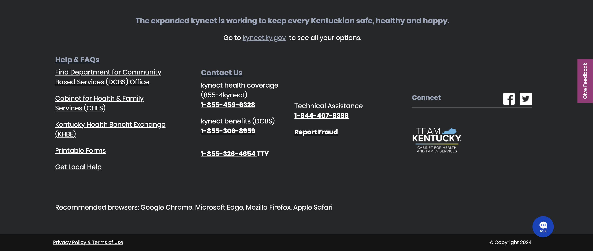

Example 5
Footer
May be a bit un-conventional, but as per the documentation of this website, this footer is a molecule component. It consists of static hyperlinks, text elements and icons and serves a footnote and quick access place for important links in the web application.